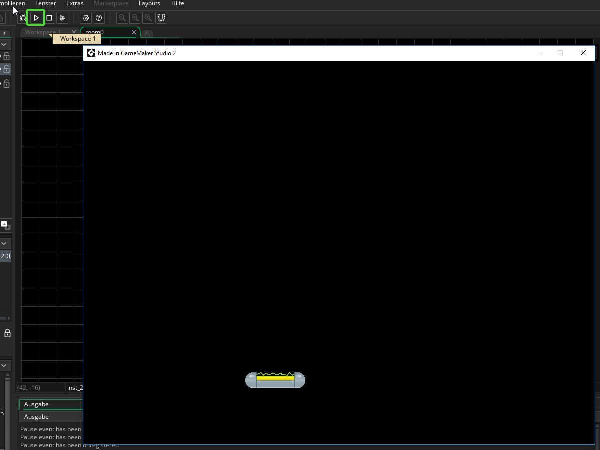

4. Der Balken¶
Ziele
In diesem Kapitel wirst das Objekt für den Balken erstellen und programmieren.
4.1. Objekt erstellen¶
Klicke mit der rechten Maustaste unter Ressources auf Objekte -> Objekt erstellen
Im Workspace siehst du nun das neu erstellte Objekt. Gib ihm den Namen "obj_Balken" und wähle das Sprite für den Balken aus.

Mache danach einen Doppelklick auf room0 (unter Ressourcen->Räume) und füge das Objekt mit Drag and Drop in den Raum ein.
Du kannst das Spiel nun auch schon testen!
Zum Starten musst du einfach auf den "Play"-Button in der oberen Leiste drücken.

Allerdings tut sich in unserem Spiel ja noch gar nichts!
4.2 Bewegung¶
Der Balken soll sich bewegen, wenn du auf die Pfeiltaste links bzw. rechts drückst.
Lege als Erstes eine Variable für die Bewegungsgeschwindigkeit an. Gehe dafür im Workspace wieder zum obj_Balken und klicke auf Variablendefinitionen->Hinzufügen und erstelle eine Variable vom Typ Real, gib ihr den Namen "geschwindigkeit" und setze den Standardwert auf 15.

Ereignisse
Das Verhalten von Gamemaker Objekten wird über sogenannte Ereignisse geregelt. Ereignisse sind z.B. das Drücken einer Taste oder eine Kollision.
Klicke auf Ereignis hinzufügen->Taste gehalten->links um ein neues Ereignis hinzuzufügen.

Im Workspace siehst du nun ein neues Fenster für das gerade erstellte Ereignis.
Ansicht ändern im Workspace
Wenn du im Workspace die mittlere Maustaste gedrückt hältst kannst du die Ansicht verschieben. Mit Strg und Mausrad kannst du Zoomen.
In dem Ereignisfenster siehst du rechts viele Befehle. Diese können per Drag and Drop einfach zum Ereignis hinzugefügt werden. Suche unter dem Punkt Bewegung den Befehl auf Position springen und füge in ein. Gib dann bei X "-geschwindgkeit" ein und setze den Haken bei Relativ
Das heißt, wenn du die linke Pfeiltaste drückst hüpft das Objekt um so viele Pixel nach links (in negativer Richtung an der X-Achse), wie in der Variable geschwindigkeit festgelegt.

Wiederhole dies nun auch noch für die rechte Pfeiltaste, nur diesmal ohne das Minus vor geschwindigkeit damit sich das Objekt nach Rechts bewegt.
Teste das Programm (mit dem Play-Button in der oberen Leiste). Wenn du alles richtig gemacht hast, solltest du mit den Pfeiltasten den Balken nach rechts und links bewegen können.